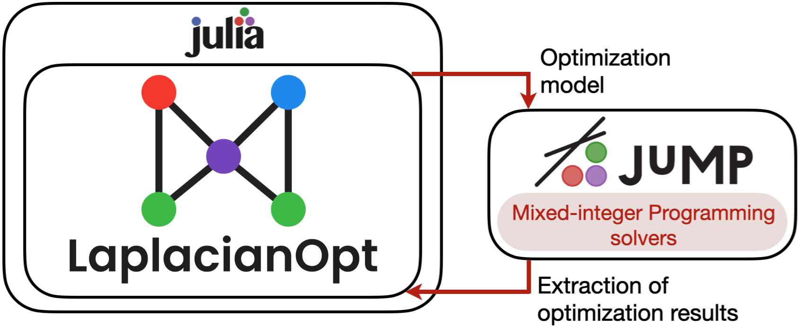
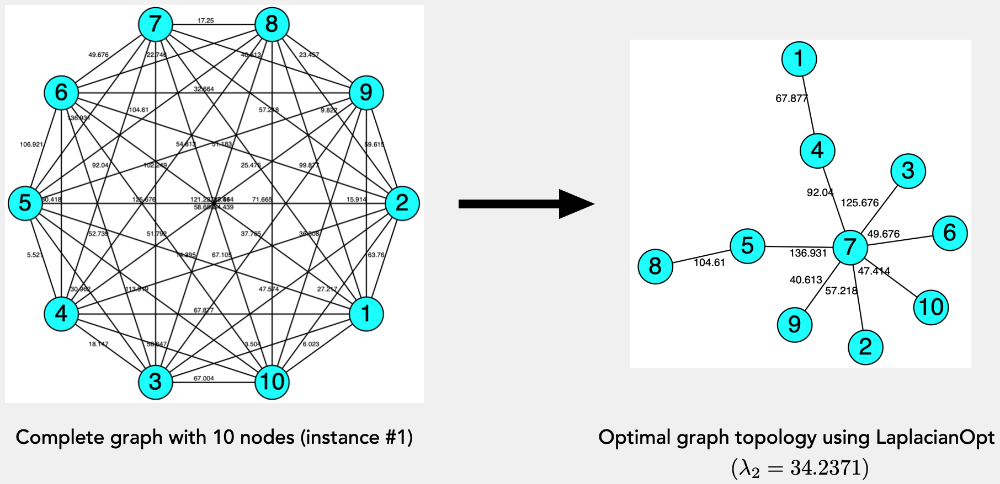

Quick Start Guide
Framework
Building on Julia, JuMP, and mixed-integer programming (MIP) solvers, LaplacianOpt is an open-source toolkit for maximum algebraic connectivity augmentation on graphs. As illustrated below, LaplacianOpt is written in Julia, a fast programming language for technical computing with an extensible type system and metaprogramming support. At a high level, this package provides an abstraction layer to achieve two primary goals:
- To capture user-specified inputs, such as the number of vertices of the graph, adjacency matrices of existing and augmentation graphs, and an augmentation budget, and to build a JuMP model of an MIP formulation with convex relaxations, and
- To extract, analyze and post-process the solution from the JuMP model and to provide optimal connected graphs with maximum algebraic connectivity.

Getting started
After installing LaplacianOpt and a MIP solver such as Gurobi.jl or the open-source GLPK, provide inputs based on the available graph data. LaplacianOpt accepts either JSON input or a data dictionary. The following example uses a data dictionary; see the example script for JSON input.
import LaplacianOpt as LOpt
using JuMP
using Gurobi
function data()
data_dict = Dict{String, Any}()
data_dict["num_nodes"] = 4
# Base graph with 3 existing edges (fixed). Note this graph can also be empty.
data_dict["adjacency_base_graph"] = [0 2 0 0; 2 0 3 0; 0 3 0 4; 0 0 4 0]
# Augmentation graph with 3 candidate edges
data_dict["adjacency_augment_graph"] = [0 0 4 8; 0 0 0 7; 4 0 0 0; 8 7 0 0]
# Augmentation budget on candidate edges
augment_budget = 2
return data_dict, augment_budget
end
data_dict, augment_budget = data()
params = Dict{String, Any}(
"data_dict" => data_dict,
"augment_budget" => augment_budget
)
lopt_optimizer = JuMP.optimizer_with_attributes(Gurobi.Optimizer, "presolve" => 1)
results = LOpt.run_LOpt(params, lopt_optimizer)Run times of LaplacianOpt's mathematical optimization models are significantly faster using Gurobi as the underlying mixed-integer programming (MIP) solver. Note that this solver's individual-usage license is available free for academic purposes.
LaplacianOpt solves a combinatorial optimization problem that is known to be NP-hard in num_nodes. To obtain quick feasible solutions using k-opt-based heuristics, set :solution_type to "heuristic" in the model options and adjust :num_swaps_bound_kopt. A larger value can improve solution quality at the cost of increased heuristic runtime.
Extracting results
For an optimal run, run_LOpt returns detailed results as a dictionary. For example, the runtime and optimal objective value (maximum algebraic connectivity) can be accessed with
results["solve_time"]
results["objective"]The "solution" field contains detailed information about the solution produced by the optimization model. For example, the edges of the optimal graph topology can be obtained from the symmetric adjacency matrix with
optimal_graph = LOpt.optimal_graph_edges(results["solution"]["z_var"])Further, algebraic connectivity and the Fiedler vector of the optimal graph topology (though can be applied on any graph topology) can be obtained from the adjacency matrix with,
data = LOpt.get_data(params)
adjacency_matrix = data["adjacency_base_graph"] + data["adjacency_augment_graph"]
optimal_adjacency = results["solution"]["z_var"] .* adjacency_matrix
graph_data = LOpt.GraphData(optimal_adjacency)
println("Algebraic connectivity: ", graph_data.ac)
println("Fiedler vector: ", graph_data.fiedler)Visualizing results
LaplacianOpt supports visualizing optimal graph layouts obtained from the results dictionary. Two options are available:
- TikzGraphs provides a simple graph layout with optional edge weights:
data = LOpt.get_data(params)
LOpt.visualize_solution(results, data, visualizing_tool = "tikz")- Graphviz provides visualization of weighted graphs. LaplacianOpt generates a raw
.dotfile that can be rendered using a local Graphviz installation or an online frontend such as Edotor:
data = LOpt.get_data(params)
LOpt.visualize_solution(results, data, visualizing_tool = "graphviz")For example, for the weighted complete graph with 10 nodes in instance #1, the optimal spanning tree with maximum algebraic connectivity, selected from $10^8$ feasible solutions and visualized using Graphviz, is shown below.
